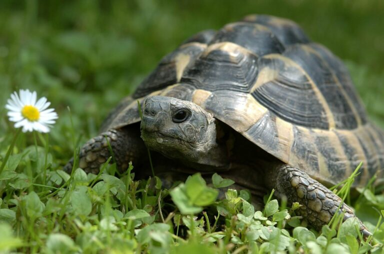
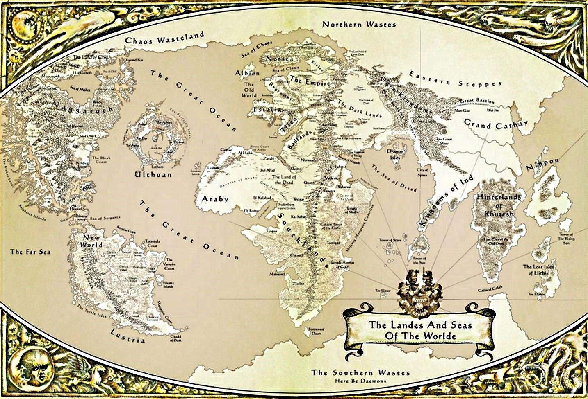

Czytanie Książek i mały żółw
Czytania książek jest bardzo interesujące. Dzięki nim możesz poznawać najrużniejsze historie te prawdziwe ale też te wymyślone przez autorów. Niektóre historie sprawią, że poczujesz się smutny i doprowadzą cię do łez a niektóre poprawią ci humor lub sprawią, że się uśmiechniesz. Skolei dzięki innym możesz poznawać daną kulture lub zwyczaje są też takie , z tak fascynującą fabułą, że można się w nich zatracić i zapomnieć o rzeczywistości, natomiast w jeszcze innych docenia się język i styl pisania. Część książek wzbudzi w tobie strach i groze a inne zaciekawią. Niketóre są czystą fantazją wymyśloną przez autorów pełną smoków i magi , ale są też takie z szarą rzeczywistością pełne realizmu. Gatunków książek jest bardzo dużo. Każdy jest wstanie znaleźć książke dla siebie bo jest ich naprawdę ogrom, a każda z nich różni się od siebie. Ponieważ, każda książka opowiada swoją, unikalną historię, a histori do opowiedzenia jest jeszcze więcej niż książek. Dlatego czytanie książek to jest z moich zainteresowań. Ponieważ niezależnie od wieku czy charakteru każdy znajdzie dla siebie książke. Dzięki książka możesz się przenieść do krajów i miejsc do których w rzeczywistości nie możesz.Książki dają ci możliwość poznawania danych dziedzin nauki, kultur czy nawet wywiadów. Dają one ludziom wiele szczęścia i radości. W książkach możesz również zobaczyć opisy najrózniejszych zwierzat np.smoków czy żółwi.
Moim innym zainteresowaniem śa podróże. Ponieważ pozwalają poznawać inne kultury religie czy jedzenie regionalne. Uczą one otwartości i tolerancji i równocześnie dają możliwość poznawania ludzi z innych miejsc. Dzięki nim możesz po powrocie wspominać najrużniejsze przygody czy miejsca. Niektóre podróze takie ja na przykład wyjazd w góry lub do lasu sprawiają, że musisz wyjść ze swojej strefy komfortu . Tak jak powiedział włoski poeta Cesare Pavese:„Podróżowanie jest brutalne. Zmusza cię do ufania obcym i porzucenia wszelkiego co znane i komfortowe. Jesteś cały czas wybity z równowagi. Nic nie należy do ciebie poza najważniejszym powietrzem, snem, marzeniami, morzem i niebem.” bo to własnie dzięki podróżą nauczmy się cieszyć każdym dniem i podróżujmy, by odkrywać jak piękne jest życie.
